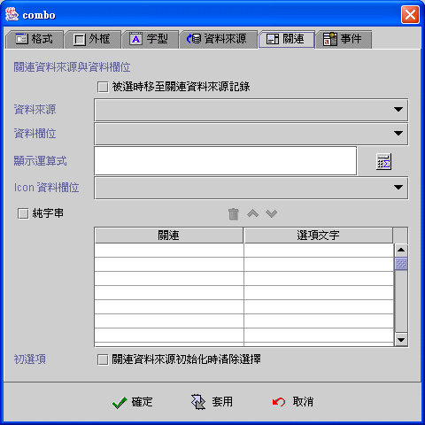
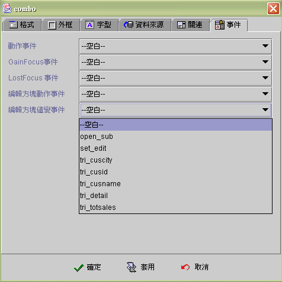

|

下拉式清單方塊 (Combobox component)
共同屬性 (common properties)
資料來源
(data source)
關連資料來源
(lookup data source)
事件
(event)
運算式屬性存取
(formula get/set properties)
下拉式清單方塊
(Combobox) 是以關連資料來源 (lookup data source) 或字串陣列 (string array) 組成列示的清單項目(item)，當下拉式清單方塊連結
(binding) 資料來源欄位 (data field) 時
，下拉式清單方塊會以資料來源的資料欄位值，搜尋關連資料來源
(lookup data source) 的資料欄位值 (data field) 或字串陣列 (string array)，當其值相等時就標示該清單項目為選取項目。
下拉式清單方塊列示的項目(item)
是以運算公式 (formula)
的結果值顯示，所以顯示的項目不一定等於連結的資料欄位值，例如：聯結的資料欄位是代碼
(code) 欄位而顯示的項目是代碼的文字描述 (description)
欄位，使用者可以根據文字描述選取下拉式清單項目，而實際關連存檔的資料卻是代碼
(code)。
在可編輯的模式
(editable) 下，可以直接輸入項目值或拉選後編輯選取項目
(item)。下拉式清單方塊的編輯方塊 (edit
box) 所顯示的資料值，是關連資料來源 (lookup data source)
的資料欄位值 (data field)，因為只能編輯實際連結 (binding)
的資料欄位 (data field)，存檔的資料才有意義。
下拉式清單方塊可以只選用關連資料來源
(lookup data source)，而不連結 (binding) 資料來源 (data source)，如果設定 被選時移至關連資料來源記錄
的屬性，可以將下拉式清單方塊當成是關連資料來源
(lookup data source) 的檔案記錄 (record)
移動選擇器，使用者按選下拉式清單項目 (item)，關連資料來源
(lookup data source) 即將目前檔案記錄 (current record) 移至 (move to)
該項目的檔案記錄，並引發關連資料來源的讀取前後事件
(before and after fetch event)，連結 (binding)
此關連資料來源的其他元件都會自動更新內含值。
下拉式清單方塊是虛擬模式
(virtual mode) 的元件，關連資料來源 (lookup data source)
的檔案記錄在初始時，並不會全部讀入下拉式清單項目中，而是將客戶端
(client) 目前關連資料來源緩衝區 (buffer)
的檔案記錄讀入，當使用者以捲動軸瀏覽或關連資料欄位不在緩衝區
(buffer) 且關連資料來源尚未至檔尾 (EOF)
時，下拉式清單方塊會以背景執行緒 (background thread) 按關連資料來源的擷取記錄數
(row fetch)，讀入檔案記錄至下拉式清單項目中。
資料來源 (data source)
-
資料來源
(data source)：選取資料來源。
-
資料欄位
(data field)：選取資料欄位。
-
可編輯
(editable)：可以直接輸入項目值或拉選後編輯選取項目
(item)。
元件外觀的不同
-
不可編輯 (read
only)：
-
可編輯 (editable)：
-
自動切換輸入法
(enable input method)：屬性為可編輯時，當Focus
移至編輯方塊時，元件自動顯示切換為，使用者作業系統目前所使用的輸入法
(input method)。
-
項目尺寸
(item size)：下拉式清單方塊選項的寬高。
▲Top
關連資料來源
(lookup data source)
-
被選時移至關連資料來源記錄：使用者選取下拉式清單方塊
(Combobox) 的項目(item)時，關連資料來源將目前的資料記錄
(current record) 移至 (move to) 該項目的資料記錄 (record)
，並引發關連資料來源的讀取前後事件(before and after fetch
event)。而連結 (binding) 此關連資料來源的其他元件都會自動更新內含值。
-
關連資料來源
(lookup data source)：選取資料來源。
-
關連資料欄位
(lookup data field)：選取資料欄位。
-
顯示運算式
(display formula)：以運算式顯示項目資料(item)。
-
Icon資料欄位：在每個項目
(item) 前顯示圖示，選擇性 (option) 屬性。選用時系統以欄位型別
(field type) 判斷是 LONGVARBINARY 的圖檔資料或是 VARCHAR
的圖檔名稱，若是圖檔名稱必須將圖檔儲存於應用程式模組的class
目錄中 Images 或 Preloadiamge 目錄下。
-
字串陣列
(string aray)：使用 "字串陣列"
而不以關連資料來源為清單方塊的項目資料。"關連" 為資料欄位， "選擇項目文字"為顯示項目文字。
-
初選項
(initial selection)：關連資料來源初始化時清除選擇。如果下拉式清單方塊沒有連結
(binding) 資料來源 (data source)，核選此屬性時，下拉式清單方塊初始為沒有任何選取項目的狀態，否則第一個項目為初始選項。如果下拉式清單方塊連結
(binding) 資料來源 (data source)，此項屬性無作用，其初始選項為資料來源欄位
(data source field) 與關連資料來源欄位 (lookup data source field)
相等的資料項目。

▲Top
事件 (event)
-
動作事件 (action event)：使用者按選
(clicked)
改變下拉式清單選項時，即引發事件 (fire event)。
-
Gain Focus 事件：當 Focus
移入元件時，即引發事件 。
-
Lost Focus 事件：當 Focus
移出元件時，即引發事件 。
-
編輯動作事件 (edit action event)：具有可編輯屬性時，使用者在編輯方塊
(edit box) 中按下 Enter 鍵時，即引發事件 (fire event)。
-
編輯值變事件
(edit changed event)：具有可編輯屬性時，當每次編輯方塊
(edit box) 輸入值改變時，即引發事件 (fire event)，每一個按鍵輸入包括刪除鍵
(delete)
但不包括方向鍵，都會引發值變事件。

▲Top
運算式屬性存取
(formula get/set properties)
SetProp("元件名稱",
"屬性", 值) ：屬性設定。
SetProp("元件名稱",
"屬性", 值1, 值2)：屬性設定。
GetProp("元件名稱",
"屬性")：屬性讀取。
| Set
Properties |
| 屬性(Properties) |
值1
(Value 1) |
值2
(Value 2) |
說明 (Descriptions) |
| enabled |
1 致能，0 失效 |
|
致能與失效。 |
| setfocus |
1 設定 Focus |
|
設定 Focus。 |
| visible |
1 顯示，0 隱藏 |
|
顯示與隱藏。 |
| repaint |
1 重繪，2
立即重繪 |
|
重繪。 |
| revalidate |
1 重整下拉式清單方塊資料 |
|
重整下拉式清單方塊資料。 |
| selected |
N 選取第 N 個選擇項目 |
|
選取第 N 個選擇項目，N 由 1 起算。 |
| bg |
RGB(red, green, blue) |
|
背景顏色。值1 必須以Formula 的 RGB() 運算式給值。
|
| fg |
RGB(red, green, blue) |
|
前景顏色。值1 必須以Formula 的 RGB() 運算式給值。
|
| x |
正整數值 |
|
左座標位置。 |
| y |
正整數值 |
|
上座標位置。 |
| w |
正整數值 |
|
元件寬度。 |
| h |
正整數值 |
|
元件高度。 |
| xy |
正整數值 |
正整數值 |
左(Value1) 上(Value2) 座標位置。 |
| wh |
正整數值 |
正整數值 |
元件寬(Value1) 高(value2)度。 |
| Get
Properties |
| 屬性(Properties) |
傳回值
(Return value) |
說明 (Descriptions) |
| isenabled |
1 致能，0 失效 |
致能與失效。 |
| isvisible |
1 顯示，0 隱藏 |
顯示與隱藏。 |
| selected |
N 被選取的是第 N 個選擇項目 |
被選取的是第 N 個選擇項目，N 由 1 起算。 |
| selectedcode |
被選取的關連資料值。 |
被選取的關連資料值。
可編輯時，傳回目前編輯值。
沒有選取時回傳空字串。 |
| selectedtext |
被選取的顯示資料值。 |
被選取的顯示資料值。
可編輯時，若有相對選項則傳回選項的顯示字串，否則傳回目前編輯值。
沒有選取時回傳空字串。 |
| x |
整數值 |
左座標位置。 |
| y |
整數值 |
上座標位置。 |
| w |
整數值 |
元件寬度。 |
| h |
整數值 |
元件高度。 |
▲Top
Copyright © 2001~
2004 Probe Technology . All Rights Reserved.
Questions, comments,
and suggestions to Service@probe.com.tw
|